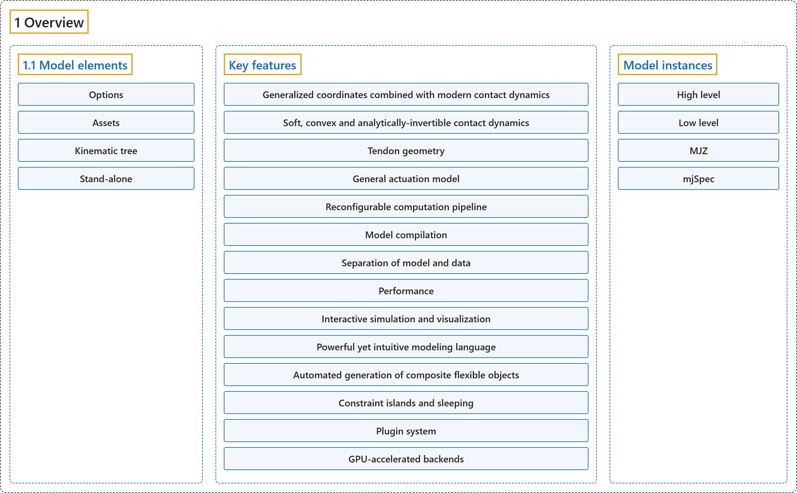

1. Overview
Classification

Glossary
| Term | Definition | 中文翻译 | Source |
|---|---|---|---|
| 1 Overview 概述 |
(context) "MuJoCo is a C/C++ library with a C API, intended for researchers and developers." | （语境）MuJoCo 是一个提供 C API 的 C/C++ 库，面向研究人员和开发者。 | Google DeepMind, n.d., "Introduction", para. 2 |
| 1.1 Model elements 模型元素 |
(No definition) | （无定义） | Google DeepMind, n.d., "Model elements" |
| Key features 主要特性 |
(context) "MuJoCo has a long list of features. Here we outline the most notable ones." | （语境）MuJoCo 有一长串特性。这里概述其中最值得注意的几项。 | Google DeepMind, n.d., "Key features", para. 1 |
| Generalized coordinates combined with modern contact dynamics 广义坐标结合现代接触动力学 |
"MuJoCo pioneered the combination of simulation in generalized coordinates with optimization-based contact dynamics." | MuJoCo 开创了在广义坐标中仿真与基于优化的接触动力学相结合的做法。 | Google DeepMind, n.d., "Key features", item 1 |
| Soft, convex and analytically-invertible contact dynamics 软的、凸的、可解析求逆的接触动力学 |
"MuJoCo is based on a different formulation of the physics of contact which reduces to a convex optimization problem, as explained in detail in the Computation chapter." | MuJoCo 基于一种不同的接触物理表述，它归结为一个凸优化问题，计算一章对此有详细说明。 | Google DeepMind, n.d., "Key features", item 2 |
| Tendon geometry 肌腱几何 |
"MuJoCo can model the 3D geometry of tendons – which are minimum-path-length strings obeying wrapping and via-point constraints." | MuJoCo 可以建模肌腱的三维几何：肌腱是服从缠绕约束和途经点约束的最短路径长度的绳索。 | Google DeepMind, n.d., "Key features", item 3 |
| General actuation model 通用驱动模型 |
"MuJoCo achieves this goal by adopting an abstract actuation model that can have different types of transmission, force generation, and internal dynamics (i.e., state variables which make the overall dynamics 3rd order)." | MuJoCo 通过采用一个抽象的驱动模型来实现这一目标，它可以有不同类型的传动、力生成和内部动力学（即使整体动力学成为三阶的状态变量）。 | Google DeepMind, n.d., "Key features", item 4 |
| Reconfigurable computation pipeline 可重新配置的计算流水线 |
"To this end MuJoCo provides a large number of flags which can be set in any combination, allowing the user to reconfigure the pipeline as needed, beyond the selection of algorithms and algorithm parameters via options." | 为此 MuJoCo 提供了大量可以任意组合设置的标志，让用户按需重新配置流水线，这超出了通过选项选择算法和算法参数的范围。 | Google DeepMind, n.d., "Key features", item 5 |
| Model compilation 模型编译 |
"This model is then compiled by the built-in compiler into the low-level data structure mjModel, which is cross-indexed and optimized for runtime computation." | 然后这个模型由内置编译器编译成低层数据结构 mjModel，它经过交叉索引，并针对运行时计算做了优化。 | Google DeepMind, n.d., "Key features", item 6 |
| MJCF MJCF |
"As mentioned above, the user defines a MuJoCo model in an XML file format called MJCF." | 如上所述，用户用一种名为 MJCF 的 XML 文件格式定义 MuJoCo 模型。 | Google DeepMind, n.d., "Key features", item 6 |
| MJB MJB |
"The compiled model can also be saved in a binary MJB file." | 编译后的模型也可以保存为二进制 MJB 文件。 | Google DeepMind, n.d., "Key features", item 6 |
| Separation of model and data 模型与数据分离 |
"MuJoCo separates simulation parameters into two data structures (C structs) at runtime:" | MuJoCo 在运行时把仿真参数分到两个数据结构（C 结构体）中： | Google DeepMind, n.d., "Key features", item 7 |
| mjModel mjModel |
"mjModel contains the model description and is expected to remain constant." | mjModel 包含模型描述，预期保持不变。 | Google DeepMind, n.d., "Key features", item 7 |
| mjData mjData |
"mjData contains all dynamic variables and intermediate results." | mjData 包含所有动态变量和中间结果。 | Google DeepMind, n.d., "Key features", item 7 |
| Performance 性能 |
"MuJoCo’s runtime performs zero memory allocations after initialization – all working memory is preallocated in mjData." | MuJoCo 的运行时在初始化之后不做任何内存分配：所有工作内存都预先分配在 mjData 中。 | Google DeepMind, n.d., "Key features", item 8 |
| Interactive simulation and visualization 交互式仿真与可视化 |
"The native 3D visualizer provides rendering of meshes and geometric primitives, textures, reflections, shadows, fog, transparency, wireframes, skyboxes, stereoscopic visualization (on video cards supporting quad-buffered OpenGL)." | 原生三维可视化器提供网格和几何基元、纹理、反射、阴影、雾、透明、线框、天空盒和立体可视化的渲染（在支持四缓冲 OpenGL 的显卡上）。 | Google DeepMind, n.d., "Key features", item 9 |
| Powerful yet intuitive modeling language 强大而直观的建模语言 |
"MuJoCo has its own modeling language called MJCF. The goal of MJCF is to provide access to all of MuJoCo’s compute capabilities, and at the same time enable users to develop new models quickly and experiment with them." | MuJoCo 有自己的建模语言 MJCF。MJCF 的目标是提供对 MuJoCo 全部计算能力的访问，同时让用户能快速开发新模型并用它们做实验。 | Google DeepMind, n.d., "Key features", item 10 |
| Automated generation of composite flexible objects 复合柔性物体的自动生成 |
"The modeling language has high-level macros which are automatically expanded by the model compiler into the necessary collections of standard model elements." | 建模语言有高层宏，由模型编译器自动展开成所需的标准模型元素集合。 | Google DeepMind, n.d., "Key features", item 11 |
| Constraint islands and sleeping 约束岛与休眠 |
"The constraint solver automatically discovers independent constraint islands – groups of bodies coupled by constraints that can be solved independently." | 约束求解器会自动发现独立的约束岛：由约束耦合、可以独立求解的刚体组。 | Google DeepMind, n.d., "Key features", item 12 |
| Plugin system 插件系统 |
"Plugins are dynamically loaded shared libraries that register themselves with the engine and are instantiated per model element." | 插件是动态加载的共享库，它们向引擎注册自己，并按模型元素实例化。 | Google DeepMind, n.d., "Key features", item 13 |
| GPU-accelerated backends GPU 加速后端 |
"In addition to the C engine, MuJoCo has GPU-accelerated backends for large-scale parallel simulation: MJX (JAX) and MuJoCo Warp (NVIDIA Warp)." | 除了 C 引擎，MuJoCo 还有用于大规模并行仿真的 GPU 加速后端：MJX（JAX）和 MuJoCo Warp（NVIDIA Warp）。 | Google DeepMind, n.d., "Key features", item 14 |
| Model instances 模型实例 |
"The user defines the model in an XML file written in MJCF or URDF. The software can then create multiple instances of the same model in different media (file or memory) and on different levels of description (high or low)." | 用户在用 MJCF 或 URDF 编写的 XML 文件中定义模型。然后软件可以在不同介质（文件或内存）中、在不同描述层次（高层或低层）上创建同一模型的多个实例。 | Google DeepMind, n.d., "Model instances", para. 1 |
| High level 高层 |
"The high level exists for user convenience: its sole purpose is to be compiled into a low level model on which computations can be performed." | 高层是为了方便用户而存在的：它的唯一用途是被编译成可在其上进行计算的低层模型。 | Google DeepMind, n.d., "Model instances", para. 2 |
| Low level 低层 |
"The high level exists for user convenience: its sole purpose is to be compiled into a low level model on which computations can be performed." | 高层是为了方便用户而存在的：它的唯一用途是被编译成可在其上进行计算的低层模型。 | Google DeepMind, n.d., "Model instances", para. 2 |
| MJZ MJZ |
(context) "The resulting mjModel can be loaded and saved into a binary file (MJB), however those are version-specific and cannot be decompiled, thus models should always be maintained as XML files or packaged into MJZ archives." | （语境）得到的 mjModel 可以加载和保存为二进制文件（MJB），但这些文件与版本相关且无法反编译，因此模型应始终以 XML 文件维护，或打包成 MJZ 归档。 | Google DeepMind, n.d., "Model instances", para. 2 |
| mjSpec mjSpec |
"The mjSpec C struct is in one-to-one correspondence with the MJCF file format." | mjSpec C 结构体与 MJCF 文件格式一一对应。 | Google DeepMind, n.d., "Model instances", para. 3 |
References
Google DeepMind. (n.d.). Overview. MuJoCo Documentation (Version 3.17.0). Retrieved October 31, 2026, from https://mujoco.readthedocs.io/en/stable/overview.html